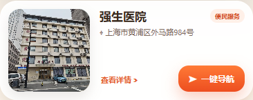
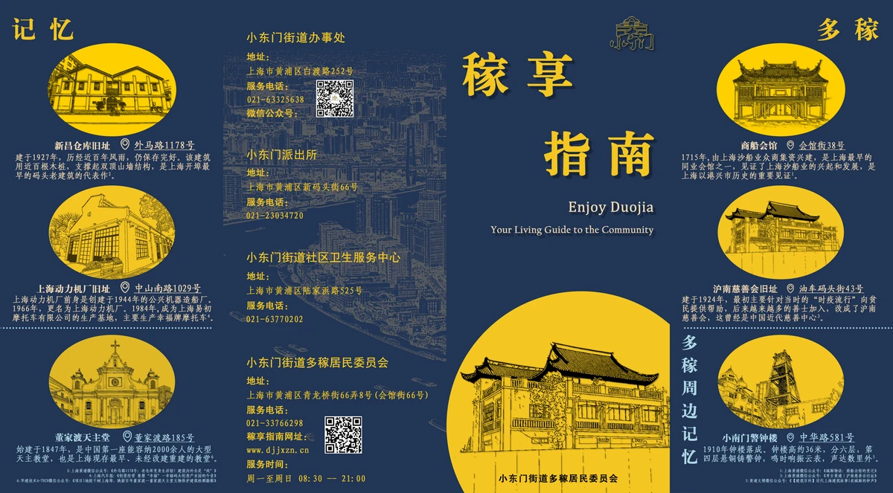
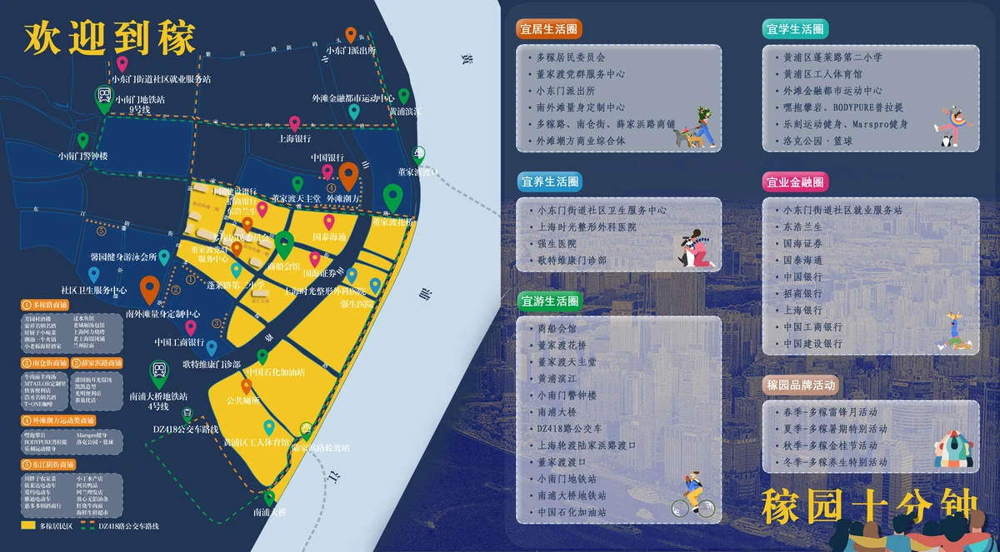

医院与纸质指南更新
2026 年 10 月 15 日 · 首页与 index_renew 两个入口同步更新，原始照片及旧版指南图片保留。
本次更新
- 名称统一为“强生医院”：地图标记、点位介绍、列表及搜索同步采用新名称，照片说明一并更新；地址和坐标不变。
- 时光整形医院实拍照片已核实：本地待审版已关联您拍摄的医院建筑与入口照片，本次确认对应无误并保留；支持点击查看大图，没有重复生成照片。
- 纸质指南内页替换：按您指定的顺序，01 文件作为正面，02 文件作为反面；图片内容说明同步与新图匹配，原有翻页、缩放与拖动功能保留。
大图保留原始 8976 × 4960 分辨率；页面先展示轻量缩略图，点开后加载高清大图。原图、旧网页素材和历史页面均未删除。
点位介绍预览



纸质指南正反面


社区记忆、公共服务与折页封面


生活圈地图与点位清单
这里点击图片可查看对应高清素材；网页中的图片预览仍支持正反面切换及缩放。


来源与保留范围
时光医院照片来源：20261013_重命名图片 / webp照片文件 / 上海时光整形外科医院.webp，与现有网页照片画面及来源记录吻合。
纸质指南图片来源：您指定的“20260927_稼享指南纸质版_更新”文件夹内，20261012 版本的 01、02 PNG 文件。仅导出网页用 WebP，未修改源文件。
除本次指定医院的名称与照片说明外，其余 55 个点位的数据、全部点位坐标、已有短评、报名链接、视频及路线均未改动。没有推送远程仓库，也没有触发网站部署。